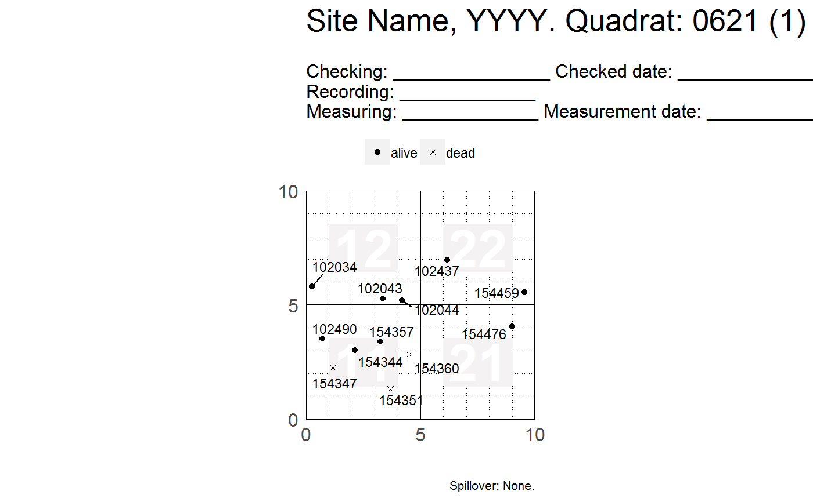
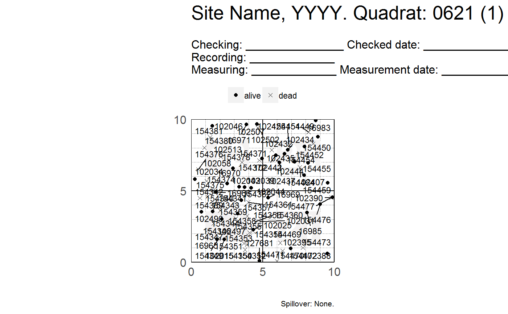
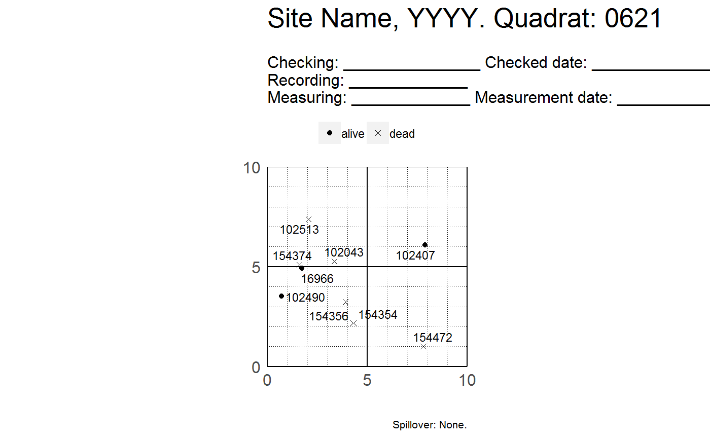
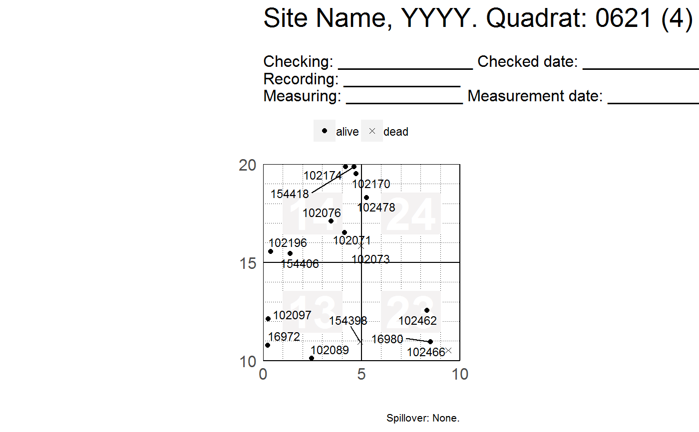
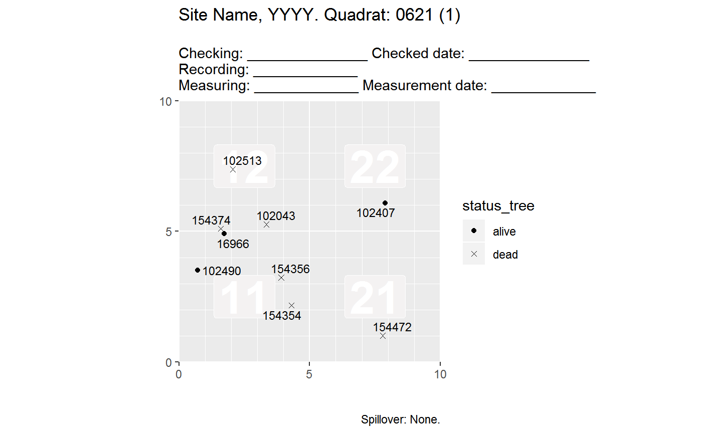
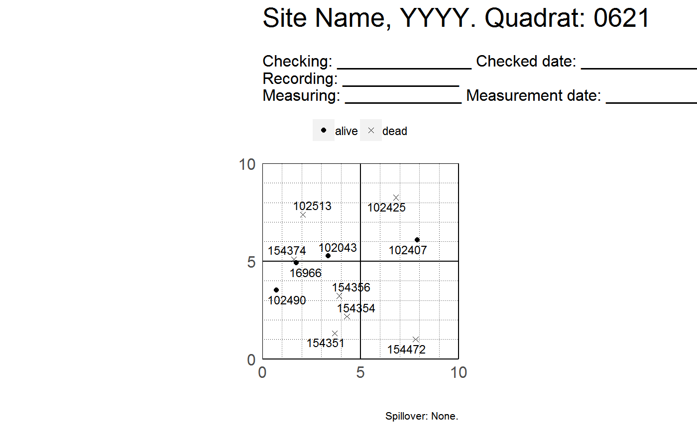

R/plot_tag_status_by_subquadrat.R
plot_tag_status_by_subquadrat.RdThis function maps tree tags by status and outputs a list of maps that can be
printed on a .pdf file. Each map shows four subquadrats within a quadrat. The
symbols on the map represent the status of each tree -- not the status of
each stem. Although you should likely provide data of only one or two
censuses, plot_tag_status_by_subquadrat() will summarize the data to reduce
overplotting. The data on the map summarizes the history of each stem across
all censuses provided. Each tag will appear in the map only once or twice: *
A tag will appear once if it belongs to a tree which status was unique across
all censuses provided -- either "alive" or "dead". * A tag will appear twice
if it belongs to a tree which status was "alive" in at least one census, and
also "dead" in at least one other census. This feature avoids unintentional
overplotting and makes interpreting the map easier.
plot_tag_status_by_subquadrat(vft, x_q = 20, x_sq = 5, y_q = 20, y_sq = 5, subquad_offset = NULL, bl = 1, br = 2, tr = 3, tl = 4, title_quad = "Site Name, YYYY. Quadrat:", show_page = TRUE, show_subquad = TRUE, point_shape = c(19, 4), point_size = 1.5, tag_size = 3, header = header_tag_status(), theme = theme_tag_status(), move_edge = 0)
| vft | A dataframe -- specifically, a ForestGEO ViewFullTable. |
|---|---|
| x_q, y_q | Size in meters of a quadrat's side. For ForestGEO sites, a common value is 20. |
| x_sq, y_sq | Size in meters of a subquadrat's side. For ForestGEO-CTFS sites, a common value is 5. |
| subquad_offset |
subquad_offset = NULL subquad_offset = -1
--------------------- -------------------
14 24 34 44 04 14 24 34
13 23 33 43 03 13 23 33
12 22 32 42 02 12 22 32
11 21 31 41 01 11 21 31
|
| bl, br, tr, tl | Label each of the four maps of a quadrat. See |
| title_quad | A string to use as a title. |
| show_page | Logical; |
| show_subquad | Logical; |
| point_shape | A vector of two numbers giving the shape of the points to
plot (see possible shapes in the documentation of ? |
| point_size | A number giving points size. Passed to
|
| tag_size | A number giving tag size. Passed to ggrepel::geom_text_repel. |
| header | A string to use as a header (see headers). |
| theme | An object of class theme. |
| move_edge | A number to adjust the extension of the grid lines beyond the plot limits. |
A list of ggplots, where each element of the list is a map of tree tags by status, showing four subquadrats.
Useful ideas and guidance came from Suzanne Lao, Stuart Davis, Shameema Jafferjee Esufali, David Kenfack and Anudeep Singh. Anudeep Sinh also wrote the algorithm to calculate subquadrats.
graphics::points(), ggplot2::geom_point(), ggplot2::theme()
header_tag_status(), theme_tag_status(), fgeo.tool::add_subquad(),
paginate(), ggrepel::geom_text_repel, fgeo.tool::drop_twice_dead().
Other functions to create a list of plots: autoplot_by_species.sp_elev,
autoplot_by_species.sp,
plot_dbh_bubbles_by_quadrat
Other functions to plot tag status: header_tag_status,
theme_tag_status
library(fgeo.map) library(fgeo.tool) # Filtering the data to map ----------------------------------------------- # Filter the data you want. Using a small ViewFullTable for example: # (see `?vft_1quad`) small_vft <- dplyr::sample_n(vft_1quad, 50) want <- filter(small_vft, CensusID == 4, PlotID == 1) p <- plot_tag_status_by_subquadrat(want) # Visualizing only the first plot p[[1]]# Print all plots to .pdf, with parameters optimized for size letter# NOT RUN { pdf("map.pdf", paper = "letter", height = 10.5, width = 8) p dev.off() # }# Be careful if filtering by DBH: You may unintentionally remove dead trees. # * If you filter by `DBH`, you loose the dead trees becaue their `DBH = NA` # * You should explicietly inlcude missing DBH values with `is.na(DBH)` p <- filter(vft_4quad, DBH > 20 | is.na(DBH)) plot_tag_status_by_subquadrat(p)[[1]]# Customizing the maps ---------------------------------------------------- # Common tweaks p <- plot_tag_status_by_subquadrat(small_vft, show_page = FALSE, show_subquad = FALSE) p[[1]]p <- plot_tag_status_by_subquadrat( small_vft, title_quad = "BCI 2012. Quadrat: ", bl = "bottom-left", br = "bottom-right", tr = "top-right", tl = "top-left", header = "Line 1: _________\nLine 2:\nLine 3:.....................", subquad_offset = -1, point_size = 3, point_shape = c(17, 6), tag_size = 2, move_edge = 0.5 ) p[[1]]# Themes library(ggplot2) p <- plot_tag_status_by_subquadrat(small_vft, theme = theme_gray()) p[[1]]# Tweaking the default theme of plot_tag_status_by_subquadrat() small_tweak <- theme_tag_status(legend.position = "bottom") p <- plot_tag_status_by_subquadrat(small_vft, theme = small_tweak) p[[1]]# For many more options see ?ggplot2::theme